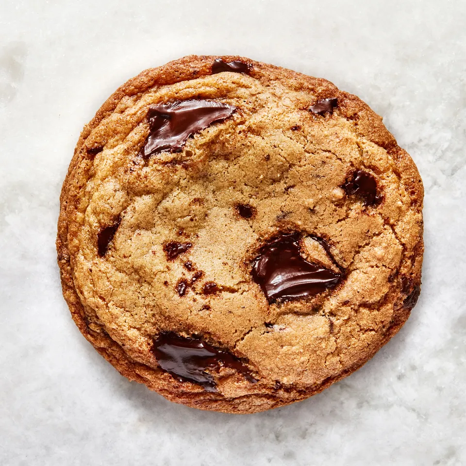

Best Cookies Since Sliced Bread
Crispy edges, a buttery chew, and plenty of chocolate chunks in every bite—all without a stand mixer.
The cookies are rooted in classic Toll House flavor, but browning the butter amps up the toasty notes. It's also key in developing the balance of crisp edges, while a high ratio of brown sugar to white sugar ensures chewy centers. The quality of the pure vanilla extract is also important here; Chris recommends Heilala or Neilsen-Massey, which have enough heft to stand up to rich dark chocolate.
Parchment-paper-lined cookie sheets help keep cleanup to a minimum, so there's no excuse not to make these. Finish them with a bit of sea salt while they're cooling on the wire rack if you like and store them in an airtight container for up to three days. They're great on their own, dunked into milk, or used as a base for ice cream sandwiches.
Ingredients
- One and a half cups all purpose flour
- One and a quarter cup of Kosher Salt
- Three quarters of a cup Baking Soda
- Three quarters of a cup unsalted butter, divided
- One cup packed dark brown sugar
- One quarter cup granulated sugar
- One large egg
- Two large egg yolks
- Two teaspoons of vanilla extract
- Six ounces of bittersweet chocolate, coarsely chopped semisweet chocolate chips
Steps
-
Place racks in upper and lower thirds of oven; preheat to 375°. Whisk flour, salt, and baking soda in a small bowl; set flour mixture aside.
-
Cook ½ cup (1 stick; 113 g) butter in a large saucepan over medium heat, swirling often and scraping bottom of pan with a heatproof rubber spatula, until butter foams, then browns, about 4 minutes. Scrape melted butter and any brown bits into a large heatproof mixing bowl and let cool 1 minute. Cut remaining ¼ cup (½ stick; 56 g) butter into small pieces and add to brown butter (it should start to melt but not foam and sizzle, so test with one piece before adding the rest).
-
Once butter is melted, add both sugars and whisk, breaking up any clumps, until sugar is incorporated and no lumps remain. Add egg and egg yolks and whisk until sugar dissolves and mixture is smooth, about 30 seconds. Whisk in vanilla. Using rubber spatula, fold reserved dry ingredients into butter mixture just until no dry spots remain, then fold in chocolate (the cookie dough will be soft but should hold its shape once scooped; if it slumps or oozes after being scooped, stir dough back together several times and let rest 5-10 minutes until scoops hold their shape as the flour hydrates).
-
Using a 1½-oz. scoop (3 Tbsp.), portion out 16 balls of dough and divide between 2 parchment-lined rimmed baking sheets. Bake cookies, rotating sheets if cookies are browning very unevenly (otherwise, just leave them alone), until deep golden brown and firm around the edges, 8-10 minutes. Let cool on baking sheets.